Schneide aus den dir zugeschickten Audio-Files ab dem Zeitpunkt jeweils ein Stück mit der Länge 5 Sekunden und speichere dieses als WAV-Datei ab. Parameter für Musik: fa=44,1 kHz, stereo, für Sprache: fa=8 kHz mono, beide 16 bit Auflösung.
Beim Schneiden achtest du darauf, dass der Schnitt am Beginn einer musikalischen Figur bzw. eines Satzes liegt.
Parameter für Musik: fa=44,1 kHz, stereo, 16 Bit Auflösung:
Parameter für Sprache: fa=8 kHz (entsprechend stumpfer), mono, 16 Bit Auflösung:
1B
Abtastfrequenzen
Erkläre, warum die Audio-Files unterschiedliche Abtastfrequenzen haben.
Die Sprachaufnahmen kann mit einer viel niedrigeren Abtastfrequenz gespeichert werden, da die Aufnahme dabei noch komplett verständlich bleibt. Bei dem Musikstück ist dies nicht der Fall. Hier würden bei einer Konvertierung zu 5 kHz die einzelnen
Instrumente zum Teil verloren gehen. Die Aufnahme würde sich “Dumpf” anhören und die Instrumente wären nicht mehr zu unterscheiden.
1C
Headerangaben
Lies die Musik- und die Sprachdatei mit wave_io ein und erkläre die Angaben im Header!
Musik
Angaben
Erklärung
Channels: 2
Die Musik wurde als Stereo Datei gespeichert, deswegen hat die Datei 2 Channel
Frames: 223333
Anzahl der Frames innerhalb der Datei liegt bei 223 333 Stück
Sample Rate: 44100
Bei dieser Datei liegt die Abtastrate bei 44kHz
Valid Bits: 16
Es gibt 16 gültige Bits
Bytes per sample: 2
Die Anzahl der verwendeten Bytes pro Sample
Sprache
Angaben
Erklärung
Channels: 1
Die Sprache wurde als Mono Datei gespeichert, deswegen hat sie nur 1 Channel
Frames: 40003
Anzahl der Frames innerhalb der Datei liegt bei 40 003 Stück
Sample Rate: 8000
Bei dieser Datei liegt die Abtastrate bei 8kHz
Valid Bits: 16
Es gibt 16 gültige Bits
Bytes per sample: 2
Die Anzahl der verwendeten Bytes pro Sample
1D
Bitrate berechnen
Berechne die Bitrate für die beiden Dateien!
Rechenbeispiel:
Bitrate = Kanäle x Samplerate x Auflösung Eine WAV-Datei in CD-Qualität hat folgende Bitrate:
2 Kanäle x 16 Bit x 44,1 kHz = 1411,2 kBit/s
Musik
= 2 Kanäle * 16 Bit * 44,1 kHz = 1411,2 kBit/s
Sprache
= 1 Kanal * 16 Bit * 8 kHz = 128 kBits/s
Aufgabe 2: Aliasing
Wir haben für die 2. Aufgabe 2 WAV-Dateien bekommen mit denen wir im Folgenden arbeiten:
sine_hi02.wav
sine_lo02.wav
2A
wave_io modifizieren
Modifiziere wave_io dahingehend, dass die Samples in der WAV-Datei in eine (lesbare) ASCIIDatei geschrieben werden. Lies die von mir geschickten Sinusdateien (Sampling-Frequenz: 16 kHz) ein und bestimme aus den resultierenden Zahlenfolgen
in der ASCII-Datei die Frequenz der Sinus Schwingungen. Begründe!
Mit folgendem Code schreiben wir die WAV-Dateien in lesbare ASCII-Dateien:
PrintWriter writer = new PrintWriter("ascii-samples.txt", "UTF-8");
// 2a Samples schreiben
for (int i = 0; i < samples; i++) {
writer.println(readWavFile.sound[i]);
}
writer.close();
Anschließend bestimmen wir aus den resultierenden Zahlenfolgen der Textdatei die Frequenz der Sinus Schwingungen der beiden Audio Files:
sinus_hi
Rechnung:
16000 Samples pro Sekunde * Dauer bis gleicher Punkt erreicht, hier durch Ablesen ~3
s := (1/16000)*3
s = 0,0001875s
Um in Herz umzurechnen:
h := 1/s
h = 5333,33Hz
sinus_lo
Rechnung:
16000 Samples pro Sekunde * Dauer bis gleicher Punkt erreicht, hier durch Ablesen ~6
s := (1/16000)*6
s = 0,000375
Um in Herz umzurechnen:
h := 1/s
h = 2666,66Hz
2B
Schätzung mit Spektralanalyse-Tool GRAM prüfen
Überprüfe deine Schätzung mit dem Spektralanalyse-Tool GRAM.
sine_hi02.wav besteht aus einem konstanten Sinuston mit 5,5kHz.
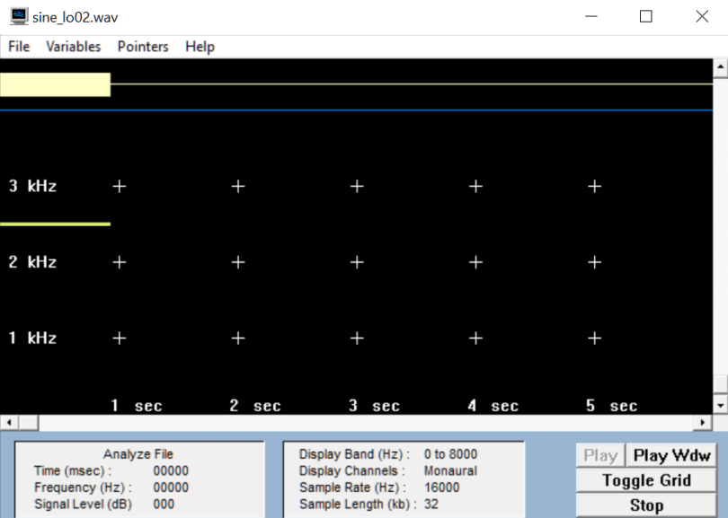
sine_lo02.wav besteht aus einem konstanten Sinuston mit 2,5kHz.
2C
Abtasttheorem
Bei der zeitlichen Diskretisierung eines Analogsignals muss das sogenannte Abtasttheorem eingehalten werden. Wie lautet es und wie lässt sich der Grenzfall, für den es gerade noch gilt, illustrieren? Erstelle hierzu eine Zeichnung und erläutere.
Wenn analoge Audio Signale aufgenommen, gespeichert und verarbeitet werden arbeitet man mit einer Abtastrate. Diese nimmt in bestimmten Abständen die Werte einer Frequenz auf. Bei dieser Abtastrate gibt es allerdings ein paar Dinge, die man
beachten muss um keine essentiellen Daten zu verlieren. Dazu im Folgenden eine visualisierte Erklärung im Detail:
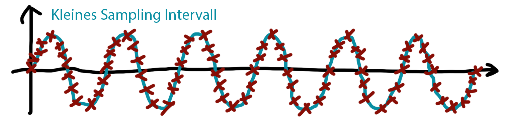
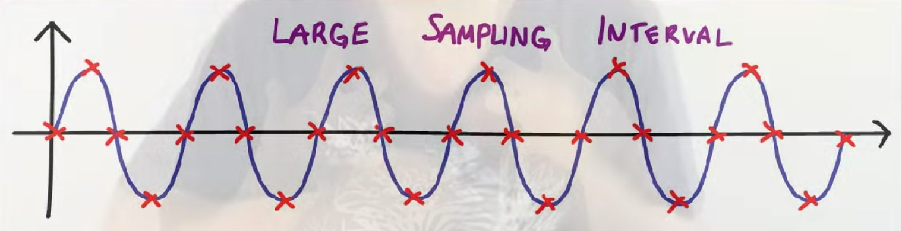
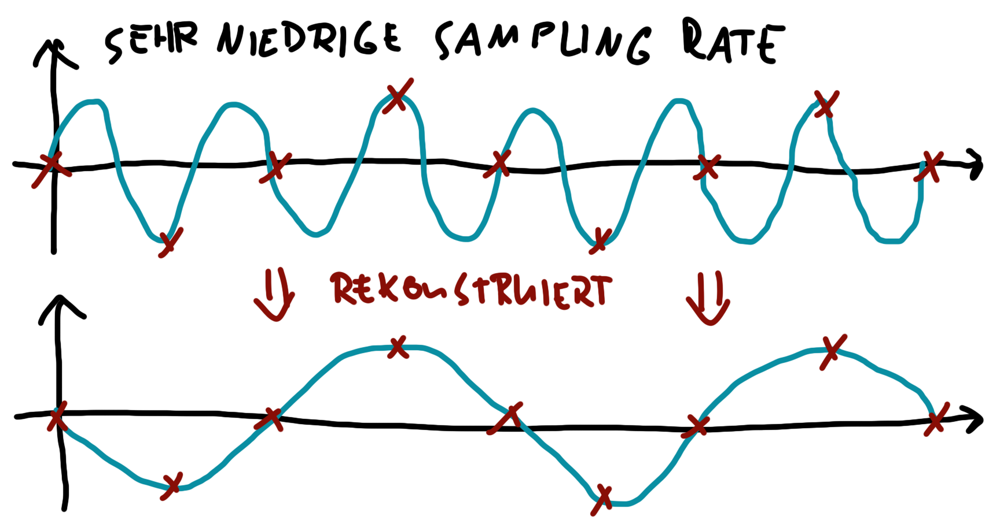
Grenzfall Abtasttheorem
Das Abtasttheorem besagt, dass ein auf
fmax
bandbegrenztes Signal aus einer Folge von äquidistanten Abtastwerten exakt rekonstruiert werden kann, wenn es mit einer Frequenz von größer als
2 x fmax
abgetastet wurde.
Wichtig ist also dass man mindestens 2 mal pro Frequenz den Ton abtastet um bei dem Rekonstruieren einer Audio Datei keine Inhalte zu verlieren.
2D
Vorbehandlung Audiosignal
Bei herkömmlichen Soundkarten tritt systembedingt kein Aliasing auf, weil das Audiosignal stets geeignet vorbehandelt wird. Wie sieht diese Vorbehandlung aus?
Soundkarten wenden auf eingehende Audiosignale einen low-pass filter an, der nur Frequenzen unter dem Aliasing-Grenzwert zulässt. Dadurch werden alle höheren Frequenzen, die ohne Vorbehandlung durch Aliasing verzerrt würden, herausgefiltert.
2E
Aliasing-Verzerrungen
Modifiziere wave_io dahingehend, dass vom eingelesenen Audiosignal jeder zweite Abtastwert verworfen wird und das resultierende Signal abgespeichert wird. Der Header muss natürlich entsprechend verändert werden!
Wir erzeugen ein neues Array, in das jeweils jeder zweite Wert der Originaldatei abgelegt wird, und schreiben dies in eine Datei.
short[] downsampledAudio = new short[readWavFile.sound.length / 2 ];
for (int i = 0; i < samples; i+=2) {
downsampledAudio[i/2] = readWavFile.sound[i];
}
WavFile.write_wav(outFilename, numChannels, numFrames/2, validBits, sampleRate/2, downsampledAudio);
2F
Down-Sampling
Wende das erstellte Programm auf die von mir geschickten Sinusdateien an (sine_hiXX.wav und sine_loXX.wav) an. Welche Frequenzen erscheinen nach dem Down-Sampling? Was würde passieren, wenn man geeignet bandbegrenzen würde?
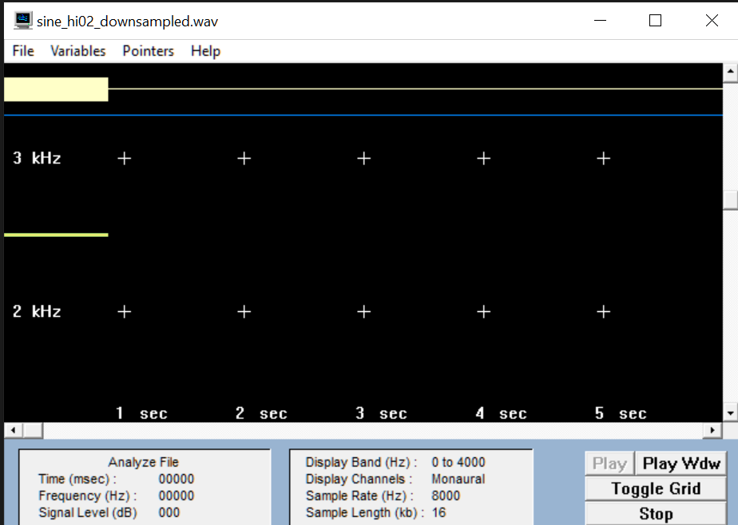
sine_hi
Hier können wir sehen, dass aus den ursprünglichen 5,5kHz durch Aliasing 2,5kHz geworden ist.
sine_lo
Hier hat sich die Frequenz nicht verändert, da die Abtastrate noch hoch genug ist, um 2,5kHz ohne Aliasing aufzunehmen.
Was würde passieren, wenn man geeignet bandbegrenzen würde?
In diesem Fall würde der Ton verschwinden, da wir mit der Abtastfrequenz die hohen Töne nicht mehr bedienen könnten.
Übung 1, Aufgabe 3: Bitreduzierung
3A
PC-Soundkarten
Die herkömmlichen PC-Soundkarten arbeiten meist entweder mit 16 oder 8 bit-Auflösung. Wie groß ist die Anzahl bei diesen beiden Werten darstellbaren Amplitudenwerten?
16 bit-Auflösung: 2^16=65536
8 bit-Auflösung: 2^8=256
3B
Bitanzahl reduzieren
Modifiziere wave_io dahingehend, dass die Bitanzahl reduziert wird. Dazu werden alle Samples durch eine Potenz von 2 geteilt (Integer-Division ohne Rest). Damit das resultierende Signal nicht leiser wird als das Original, wird die Operation durch Multiplikation
mit derselben 2er Potenz kompensiert. Zu beachten: Der Datentyp hat nach wie vor 16 bit!
// 3b Bitreduzierung
short reduced_bits = 13;
int divideBy = (int) Math.pow(2, reduced_bits);
for (int i = 0; i < samples; i++) {
readWavFile.sound[i] = (short) ((short) (readWavFile.sound[i] / divideBy) * divideBy);
}
WavFile.write_wav(outFilename, numChannels, numFrames, validBits, sampleRate, readWavFile.sound);
3C
Wave-Dateien Bitanzahl hörbare Grenze der Qualität
Mit dem entstandenen Programm sollen nun die in Aufgabe 1 erzeugten Wave-Dateien (Sprache und Musik) bitreduziert werden. Ab welcher Bitanzahl tritt eine hörbare, also deutliche Verschlechterung der Qualität ein? Bei wie viel Bit ist das Sprachsignal
noch verständlich?
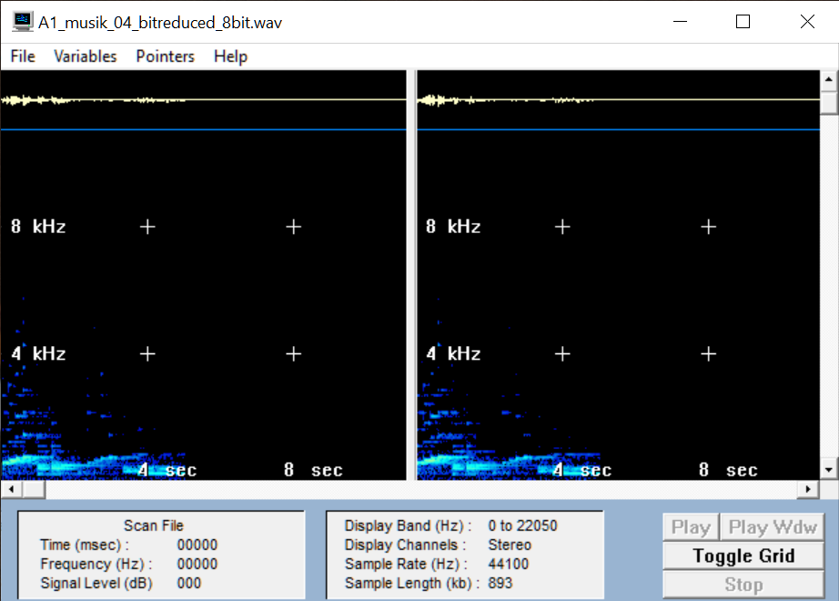
Musik Grenze der Qualität (um 8 Bit reduziert) mit leichtem Rauschen:
Ab einer Bitreduzierung von 8 Bit tritt eine hörbare Verschlechterung der Audioqualität des Musikstücks ein.
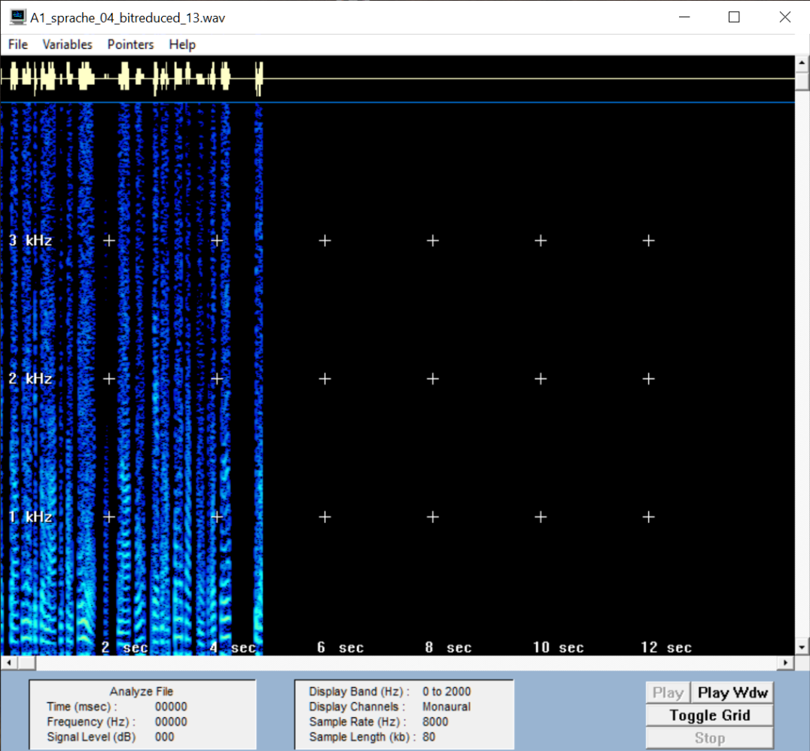
Sprache Grenze der Qualität (13 Bit reduziert), stark verzerrt:
Ab einer Bitreduzierung von 13 Bit merkt man merklich wie die Qualität der Sprachaufnahme stark abnimmt.
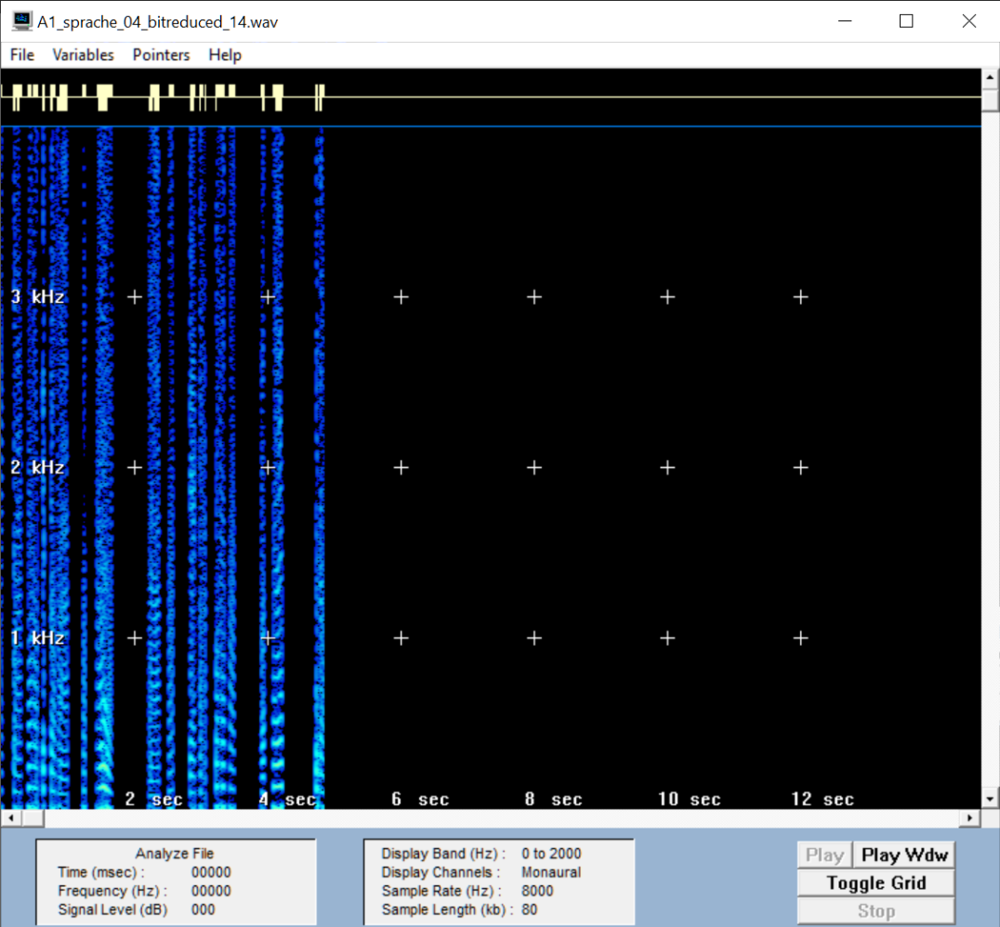
Sprache Grenze der Verständlichkeit (14 Bit reduziert), nicht mehr wirklich nachvollziehbar was gesagt wird:
Ab einer Reduzierung der Audio Datei um 14 Bit wird es schwer den Sprecher zu verstehen und man kann nur noch in Grundzügen erahnen, was er sagt.
3D
Charaktereigenschaften Quantisierungsgeräusche
Was charakterisiert das entstehende Quantisierungsgeräusch bei der Bitreduzierung und macht es besonders störend?
Durch das Quantisieren schleicht sich ein Rauschen in das Audiosignal ein, welches die Qualität der Aufnahme sehr stark stört.
3E
Differenzsignal
Modifiziere dein Programm noch einmal so, dass auch das Differenzsignal zwischen Original und bitreduziertem Signal, d.h. der Quantisierungsfehler ausgegeben werden kann. Dabei musst du bedenken, dass z.B. bei der 1 Bit Reduzierung das Quantisierungsrauschen
nur von -1 bis +1 verlaufen würde. Dieser Wertebereich wäre viel zu klein, als dass man das Rauschen beim Abspielen als 16bit-Wert noch hören könnte. Daher muss das Rauschen durch Multiplikation mit einer 2er Potenz verstärkt werden. In
anderen Worten: Hat man vorher durch 2^n geteilt, sollte man das Differenzsignal vor dem Abspeichern mit 2^(16-n-1) multiplizieren. So ist sichergestellt, dass der Verstärkungsfaktor mit der Anzahl der gelöschten Bits kleiner wird.
Der Code für die Aufgabe:
Hier muss wiederholt in (short) gecastet werden, da Division und Multiplikation int-Werte zurückgeben
// 3e Bitreduzierung Differenz
short[] difference = new short[readWavFile.sound.length];
for (int i = 0; i < samples; i++) {
difference[i] = (short) (readWavFile.sound[i] - reducedSamples[i]);
difference[i] = (short) (difference[i] * Math.pow(2, 16 - reduced_bits -1));
}
WavFile.write_wav("modified-difference.wav", numChannels, numFrames, validBits, sampleRate, difference);
Die Differenz bei einer 1 bit-Reduzierung:
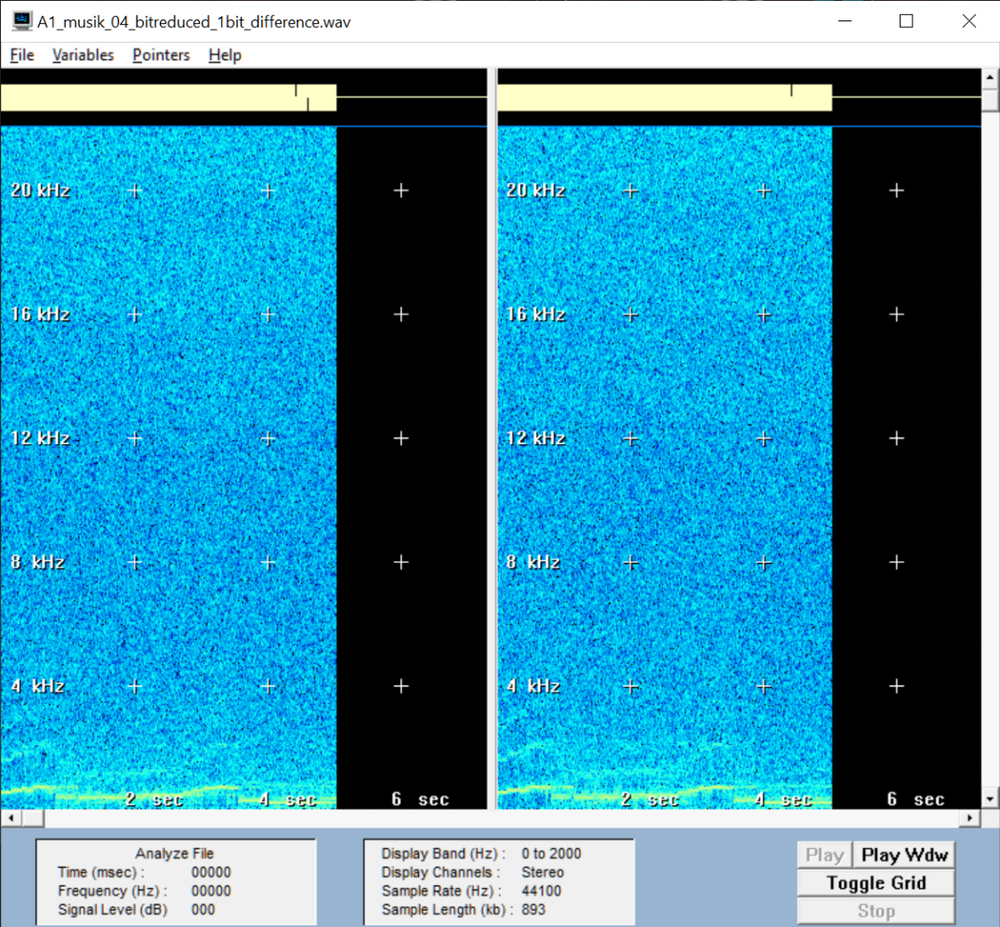
Musik - 1 Bit Differenz:
Sehr starkes rauschen, das Grundsignal ist aber trotzdem hörbar.
Sprache - 1 Bit Differenz:
Das Ursprungssignal ist nicht zu verstehen.
Differenz bei den hörbaren Quantisierungsfehlern:
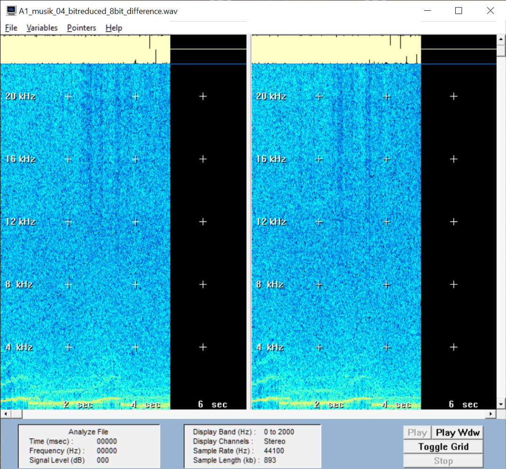
Musik - 8 Bit Differenz:
Das Ursprungssignal ist deutlich wahrnehmbar.
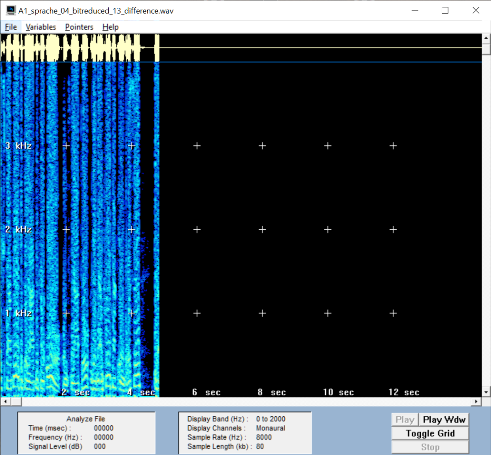
Sprache - 13 Bit Differenz:
Da so stark reduziert wurde, ist das Differenzsignal wieder hochauflösender als das reduzierte Signal.
3F
Charakter des Rauschen
Welchen Charakter hat das Rauschen bei einer Reduktion um 1bit und wie verändert es sich bei zunehmender Bit-Reduktion?
Das Rauschen ist wird von sanft und unauffällig steigernd immer lauter und kratziger und nimmt mehr und mehr Elemente des Originaltons mit sich.